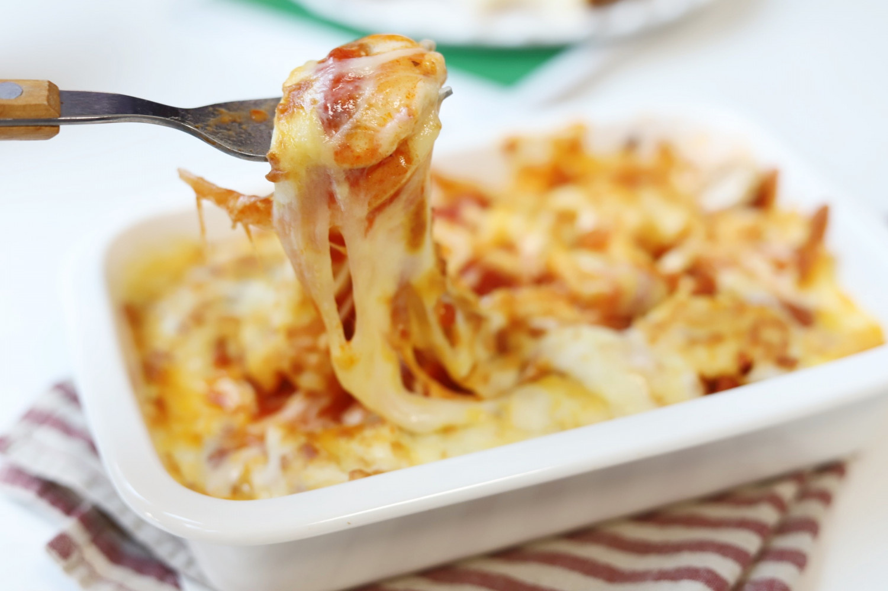

A SIMPLE BOWL OF SOFT TOFU GRATIN
Ingredients
| soft tofu | 1 pack |
| mushroom | 2 ea |
| mozzarella cheese | enough |
| tomato sauce | 7 ts |
| onion | 1/4 ea |
Cooking Steps
STEP 1/10
First, slice the onion.
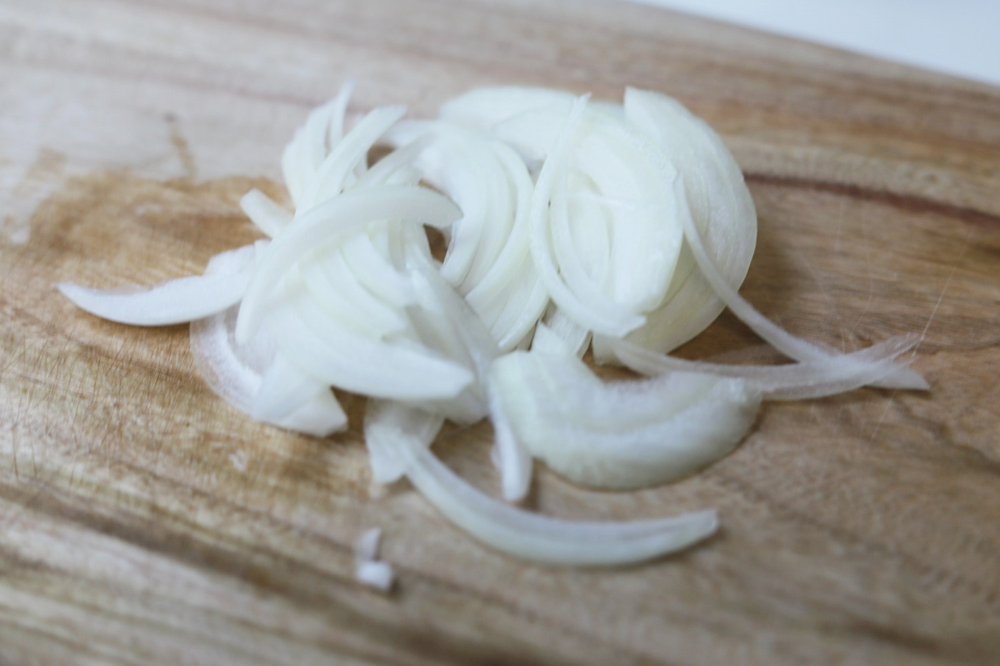
STEP 2/10
Slice the mushrooms.
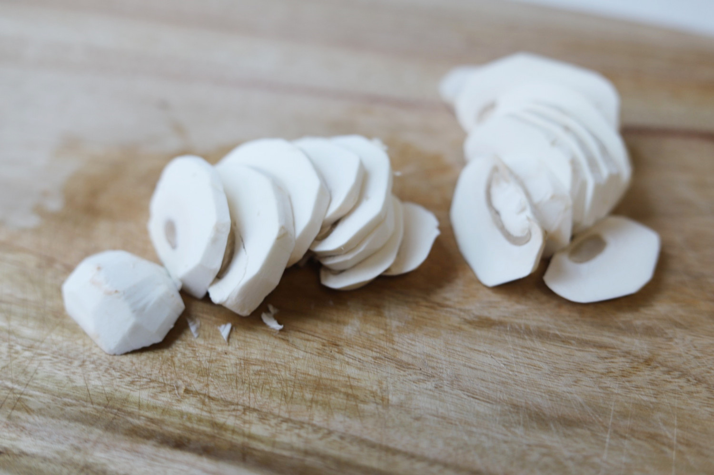
STEP 3/10
Prepare the soft tofu by draining excess water. Cut the tofu into 1 cm thick pieces.
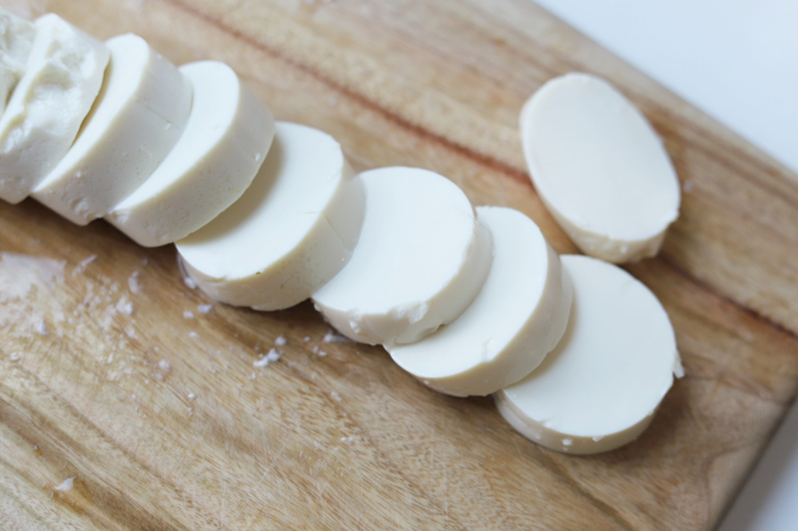
STEP 4/10
Place the soft tofu in an oven-safe dish.
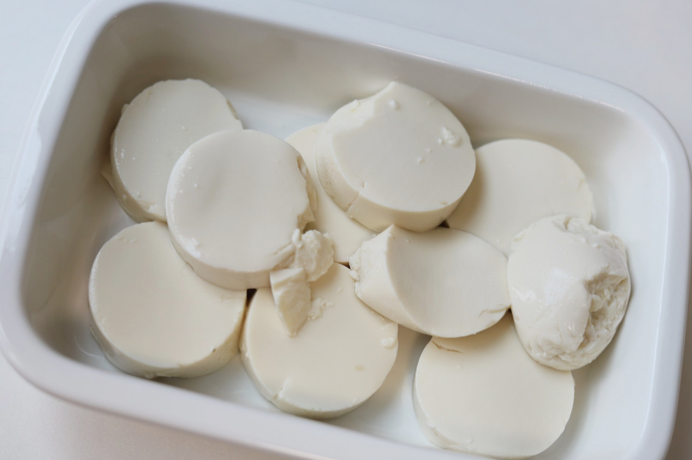
STEP 5/10
Place the onions on top of the tofu.
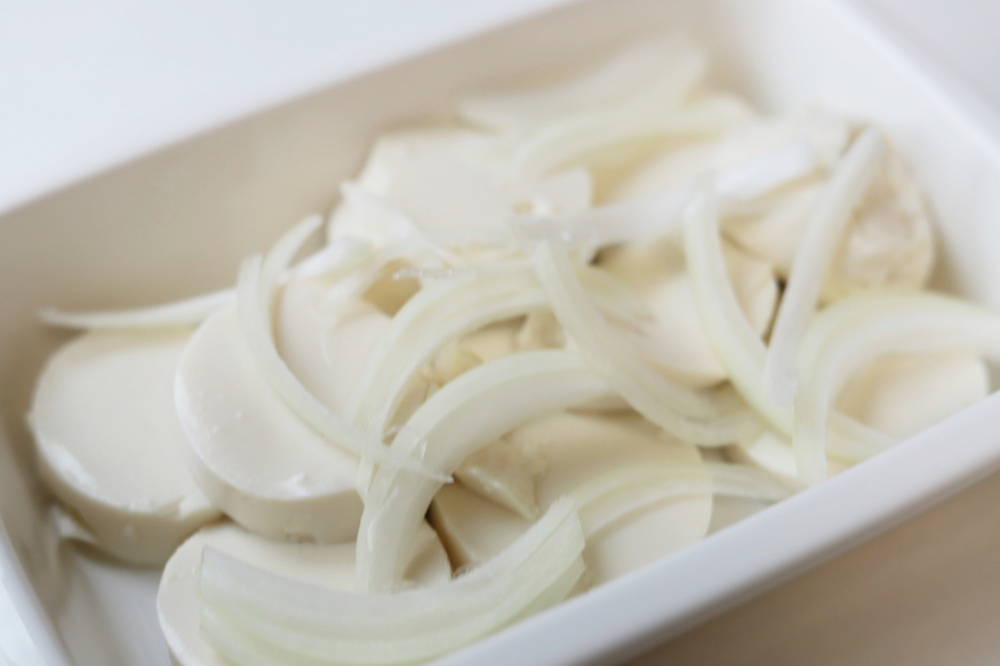
STEP 6/10
Place the mushrooms on top of the onions.
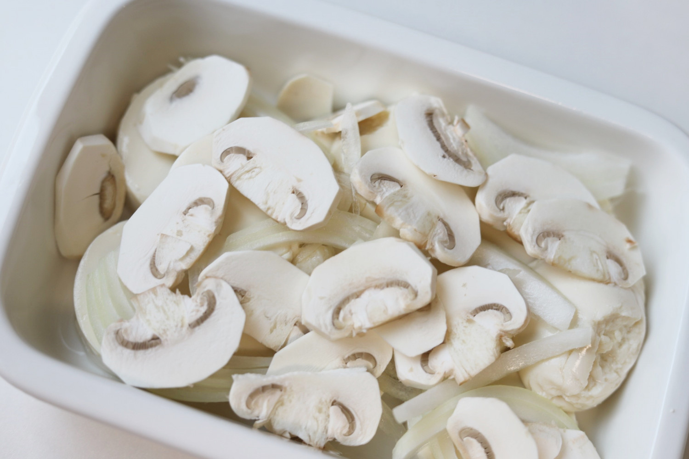
STEP 7/10
Add the tomato sauce evenly over the ingredients.
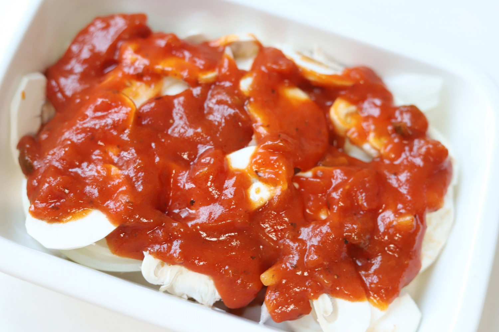
STEP 8/10
Sprinkle mozzarella cheese on top.
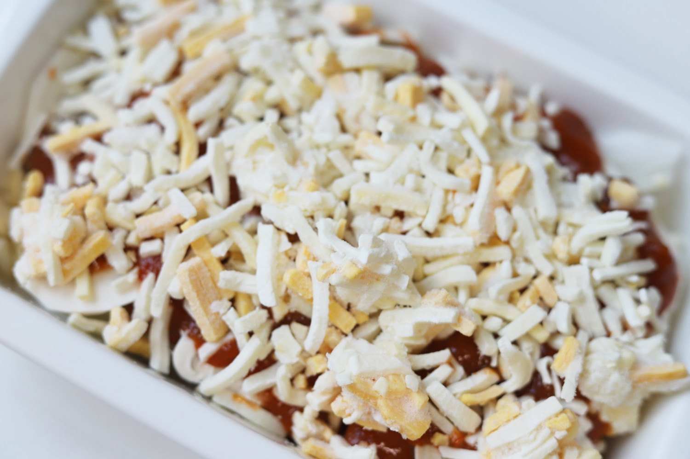
STEP 9/10
Place the dish in the oven for 5 minutes. An air fryer can also be used.
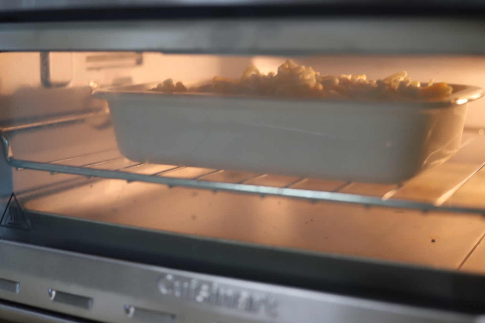
STEP 10/10
Voila! Your soft tofu gratin is ready!
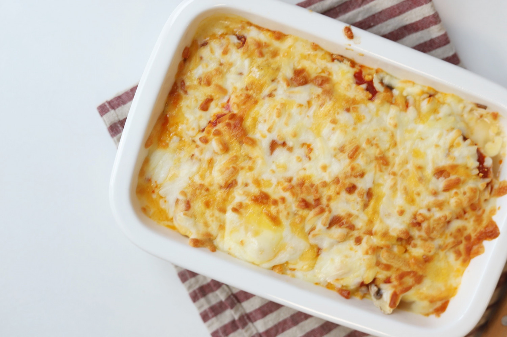